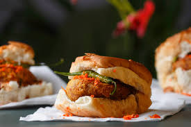
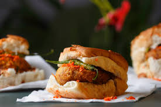

TOP 5 FOODS
1. Kolhapuri Misal: This is a spicy and flavorful dish made with sprouted lentils (matki), a special Kolhapuri gravy, and pav (bread). It's a must-try street food and a popular breakfast or lunch option.
2. Kolhapuri Tambda and Pandhara Rassa (Mutton Curry):
This is a spicy and flavorful dish made with sprouted lentils (matki), a special Kolhapuri gravy, and pav (bread). It's a must-try street food and a popular breakfast or lunch option.
2. Kolhapuri Tambda and Pandhara Rassa (Mutton Curry):
 Kolhapur is renowned for its mutton dishes, particularly Tambda Rassa (red gravy) and Pandhara Rassa (white gravy). These curries are known for their rich flavors and are often enjoyed with rice or roti.
3. Vada Pav:

A classic Mumbai street food, Vada Pav is also popular in Kolhapur. It consists of a deep-fried potato patty (vada) served in a soft bread roll (pav) with various chutneys and spices.
4. Davangiri Loni Dosa:
Kolhapur is renowned for its mutton dishes, particularly Tambda Rassa (red gravy) and Pandhara Rassa (white gravy). These curries are known for their rich flavors and are often enjoyed with rice or roti.
3. Vada Pav:

A classic Mumbai street food, Vada Pav is also popular in Kolhapur. It consists of a deep-fried potato patty (vada) served in a soft bread roll (pav) with various chutneys and spices.
4. Davangiri Loni Dosa:
 This is a unique dosa variant made with a generous amount of butter, making it rich and flavorful. It's a popular choice for breakfast or a light meal.
5. Non-Vegetarian Thalis:
This is a unique dosa variant made with a generous amount of butter, making it rich and flavorful. It's a popular choice for breakfast or a light meal.
5. Non-Vegetarian Thalis:
 Kolhapur offers a variety of non-vegetarian thalis, which are platters of multiple dishes including curries, rice, and other accompaniments. You can often find mutton thalis, chicken thalis, and fish thalis at various restaurants, according to online sources.
Kolhapur offers a variety of non-vegetarian thalis, which are platters of multiple dishes including curries, rice, and other accompaniments. You can often find mutton thalis, chicken thalis, and fish thalis at various restaurants, according to online sources.